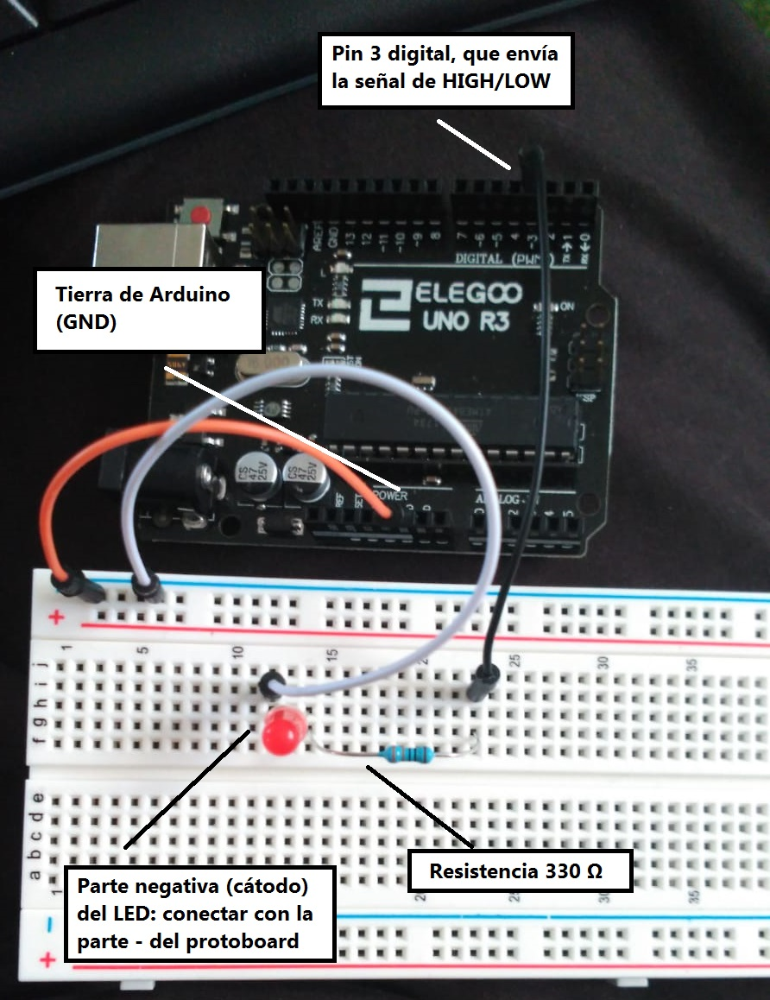

Para conectar el led lo hacemos como la siguiente imagen:
Usaremos el siguiente código para encender y apagar el LED:
// Esta función se ejecutará una sola vez al inicio del programa.
void setup() {
// 1º Parámetro: Número de pin que vamos a usar.
// El 13 es el led que se encuentra en el Arduino.
// 2º Parámetro: Indicar si queremos que sea de entrada o de salida el pin.
pinMode(3, OUTPUT) ;
}
// Función que está apagando y encendiendo el pin integrado todo el tiempo.
void loop(){
int tiempoDeEsperaCuandoEstaApagado = 50;
int tiempoDePunto = 200;
int tiempoDeRaya = 500;
for (int i = 0; i < 3; i++) {
digitalWrite (3,HIGH);
delay(tiempoDePunto);
digitalWrite(3,LOW);
delay(tiempoDeEsperaCuandoEstaApagado);
}
for (int i = 0; i < 3; i++) {
digitalWrite(3,HIGH);
delay(tiempoDeRaya);
digitalWrite(3,LOW);
delay(tiempoDeEsperaCuandoEstaApagado);
}
}